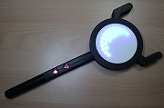
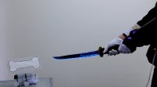

Here, Mashigure's principal products are introduced.
趣味で作った製作物の中から、代表作を紹介します。
Ano Gakki / あの楽器
 The digital shoulder strap keytar-like device “Ano Gakki“ was based off of a previously fictional instrument, which made its debut in December of 2008 alongside Hatsune Miku in the music video for her popular song “Innocence” .
Since the video released, her fans have been numerous attempts to make a replica of Ano Gakki.
This model of Ano Gakki has a LED panel, which is installed under the semitransparent keyboard of the instrument.
Its light effects make Ano Gakki as visually stunning.
The digital shoulder strap keytar-like device “Ano Gakki“ was based off of a previously fictional instrument, which made its debut in December of 2008 alongside Hatsune Miku in the music video for her popular song “Innocence” .
Since the video released, her fans have been numerous attempts to make a replica of Ano Gakki.
This model of Ano Gakki has a LED panel, which is installed under the semitransparent keyboard of the instrument.
Its light effects make Ano Gakki as visually stunning.
watch video on Nico-Video
あの楽器とは、【初音ミク】Innocence【3DPV】 に登場する、初音ミクが弾いている架空の楽器こと。
色々な人が開発した様々なバージョンが存在します （あの楽器についてはこちらを参照）。
ましぐれ開発モデルの特徴は「LEDパネル」「半透明鍵盤」「eVocaloid音源搭載」「楽器として実際に演奏可能」など。
blog記事を読む・
動画を見る
exhibited at NT Kyoto 2014, 2015, 2017 and 2018, NT Nagoya 2014 and 2016, NT Kanazawa 2014, NT Kaga 2017, NT Hiroshima 2019, Ise Geek Fair 2014, Vocacon 2015 and 2016, Maker Faire Kyoto 2019 and OMMF2014.
Ano Gakki mini / あの楽器 mini
This is smaller version of Ano Gakki, that is developed because the original version is too large to bring on airplane.
watch video on Nico-Video
海外でのイベント展示に向けて制作した、飛行機で運べるサイズのあの楽器。木目調＆青色LEDなど、オリジナルとは趣を変えてアレンジしています。
動画を見る
exhibited at NT Kyoto 2016, NT Nagoya 2017, NT Kanazawa 2015, Maker Faire Taipei 2015 and Maker Faire Berlin 2015.
PicoPico-Box / ピコ箱
 This is a Musical Instrument with 8-bit sound, that can be played mucsic by using X-BOX One controller.
"PicoPico" is a japanese Onomatopoeia to express 8-bit sound.
This is a Musical Instrument with 8-bit sound, that can be played mucsic by using X-BOX One controller.
"PicoPico" is a japanese Onomatopoeia to express 8-bit sound.
show project page on github
watch video on Nico-Video
ピコピコ音が出る箱型ガジェットです。ゲームのコントローラを使って演奏することができます。
また、PCにつなぐとUSB-MIDI機器として認識されるので、PC側のソフトウェアと組み合わせて色々な演奏が可能です。
プロジェクトページを見る
動画を見る
exhibited at NT Kyoto 2019, NT Nagoya 2018 and 2019, NT Kaga 2018, Maker Faire Taipei 2018, OSC 2019 Kyoto and Ise Geek Fair 2018 and 2020 Online.
PicoPico-Box mini / ピコ箱 mini
The smaller version of PicoPico-Box.
This model does not have USB Midi function, however has micro:bit as a wireless communication module.
show project page on github
小型版ピコ箱、USB MIDI関連の機能やラインアウト端子などを省いた代わりに、micro:bitを通信モジュールとして搭載しています。
プロジェクトページを見る
exhibited at NT Kaga 2019.
Poke-Miku Touch / ポケミクTouch
 This is a Musical Instrument with Virtual singer HATSUNE Miku's Voice.
It can be played not only by touching screen, but also by connecting USB-MIDI devices.
This is a Musical Instrument with Virtual singer HATSUNE Miku's Voice.
It can be played not only by touching screen, but also by connecting USB-MIDI devices.
watch video on Nico-Video
学研大人の科学から発売されている『ポケットミク』（ポケミク）をRaspberry Piに接続し、一体化することでポケミクの隠れた機能を引き出し、簡単に色々な演奏ができるようにしてみました。
タッチパネルで演奏できるので「ポケミクTouch」と命名していますが、USBポートに接続したキーボードを使って演奏できるなど、タッチパネル以外にも多彩な演奏方法で歌を奏でることができます。
動画を見る
exhibited at NT Kyoto 2018 and NT Kanazawa 2017.
Poke-Miku Pi / ポケミクPi
 This is a Musical Instrument with Virtual singer HATSUNE Miku's Voice.
It can be played using USB-MIDI devices or gamepad.
This is a Musical Instrument with Virtual singer HATSUNE Miku's Voice.
It can be played using USB-MIDI devices or gamepad.
学研大人の科学から発売されている『ポケットミク』（ポケミク）にRaspberry Pi Zeroと液晶ディスプレイ、USBハブを内蔵し、一体化することでポケミクの隠れた機能を引き出し、簡単に色々な演奏ができるようにしてみました。 USBポートに接続したゲームパッドやキーボードを使って演奏できます。
NFC Fortune-Telling / デジタルおみくじ
This is a fortune-telling machine. When you choose a NFC card and put it on the card reader, the result of fortune-telling shown on LED panel. This is inspired by Japanese "Omikuji".
show project page on github
watch video on Nico-Video
NFC規格のICカードをかざすとLEDパネル上に運勢が表示される占いガジェット。
プロジェクトページを見る・
動画を見る
Rina Chan Board / デジタル璃奈ちゃんボード
This is a board to show emotions, that is wared by Rina TENNOJI (Love Live!).
watch video on Nico-Video
ラブライブに登場するキャラクター「天王寺璃奈」が着用するボードを再現してみました。
ボード上に色々な表情をLEDで描きます。
動画を見る
exhibited at NT Kyoto 2019, Maker Faire Kyoto 2019 and 2022, NT Sabae 2020 and 2022, NT Kaga 2022, NT Takanohara and Ise Geek Fair 2022.
BLE Pen light / BLEペンライト
This concert pen light using 24 full colour LEDs and XIAO nRF52840 can be connected to another one and synchronised glowing.
show project page on github
watch video on Nico-Video
BLEが使えるマイコンボード「XIAO nRF52840」とフルカラーLEDを使って自作したペンライト。接続した2本が同期して光る。
プロジェクトページを見る・
動画を見る
exhibited at NT Kaga 2023, NT Takanohara, NT Kanazawa 2023, Maker Faire Kyoto 2023 and Maker Faire Taipei 2023.
Magical Staff / 魔法の杖

This is a magical staff. 93 Full Colour LEDs (WS2812B) are controlled by a mictro:bit.
show project page on github
micro:bitと円形LEDモジュールを用いて作った光る魔法の杖。ボタンを押すと模様が変わったり、LEDの光る色が変わる。
プロジェクトページを見る・
Blog記事を見る
Illuminated Skirt / 光るスカート
This is a glowing Skirt using micro:bit and full colour LED tape.
show project page on github
watch video on Nico-Video
micro:bitとフルカラーシリアルLEDモジュールを用いて作った光るスカートです。
プロジェクトページを見る・
動画を見る
exhibited at NT Kanazawa 2019, NT Kaga 2019, 2022 and 2023, NT Sabae 2020 and 2022, NT Toyama 2021 and NT Takanohara.
Megurine Luka's illumination costume / 巡音ルカさん電飾衣装
 Cosplay items of a Vocaloid "Megurine Luka" with LED illumination.
Cosplay items of a Vocaloid "Megurine Luka" with LED illumination.
ボーカロイド「巡音ルカ」さんの衣装を音に反応して光る電飾衣装にしてみました。
装着するアクセサリ類のそれぞれに電源（電池）、マイク、マイコンを搭載し、マイクが音を拾うとLEDを光らせるように制御しています。
blog記事を読む
exhibited at NT Kyoto 2014 and 2015, NT Kanazawa 2014, 2015 and 2016 and Vocacon 2015.
Glowing Sword “Honebami-Toshiro” / 光る刀「骨喰藤四郎」

Honebami-Toshiro is a japanese sword crafted in the 13th century.
The name of bone (Hone) breaker (bami) comes from the saying that one can effortlessly throw him and still slice through the bone of the enemy.
This gadget is modeled the legend sword.
When it is swinged, it glows and the bone-like gadget is broken.
watch video on Nico-Video
骨喰藤四郎、鎌倉時代の刀工「粟田口藤四郎吉光」の作と伝えられる刀。
「切る真似をするだけで骨まで砕ける」程の名刀とされる。
この「切る真似をするだけで骨まで砕ける」というのを超現代的解釈で再現してみました。ついでに光るよ。
blog記事を読む・
動画を見る
exhibited at NT Kyoto 2017 and NT Kanazawa 2017.
Environmental Monitor / 環境モニタ
This is an Environmental monitor developed using Wio Terminal. Temperature, humidity, CO2 concentration and atmospheric pressure are shown on LCD.
show project page on github
watch video on Nico-Video
Wio Terminalを用いて開発した環境モニタ。気温、湿度、CO2濃度、気圧を測定して表示する。
プロジェクトページを見る・
動画を見る
exhibited at Ise Geek Fair 2021(Online) and 2022 and NT Sabae 2022.
Ano Gakki App on Firefox OS / あの楽器 Firefox OS アプリ
Ano-gakki App on Firefox OS. It was proto-type but already the end of developing.
画面をタッチすると音が鳴り、あの楽器風エフェクトが表示されるFirefox OSスマートフォンアプリ。アプリ開発を学ぶ過程で試験的に作ったもの。
exhibited at OMMF2014 and 関西Firefox OS勉強会 7th GIG.
The Question mark coin box / ハテナブロック型カンパ箱
 When a coin is inserted into this coin box, various sound effect is played.
When a coin is inserted into this coin box, various sound effect is played.
コインを入れると音が鳴るカンパ箱です。どんな音が鳴るのかはコインを入れてからのおたのしみ。
コイン投入口は3Dプリンタ製で、コインで赤外線が遮られることによりコインの投入を検知します。
blog記事を読む
exhibited at NT Kyoto 2018 and NT Kanazawa 2017.
Tako-Luka Speaker / たこルカスピーカー
This is a decorated Speaker with LED illumination, that is modeled on Takoluka.
watch video on Nico-Video
たこルカさんをモチーフに制作したスピーカー内蔵のオブジェ。再生している音に合わせて光ります。
動画を見る
exhibited at NT Kyoto 2015, NT Nagoya 2014, Ise Geek Fair 2014, Vocacon 2015 and OMMF2014.
Shining Scorpion / シャイニングスコーピオン
Shining Scorpion is a one of Mini 4WD that is a car toy sold by TAMIYA Inc.
In the original game title "Shinig Scorpion" (SNES), its colour changes from blue to purple, pink and red.
This car model can be changed colour using LEDs.
show project page on github
watch video on Nico-Video
ミニ四駆「シャイニングスコーピオン」の色が青→紫→ピンク→赤と変わる様子をフルカラーLEDで再現してみました。
（元ネタ：スーパーファミコンソフト「シャイニングスコーピオン」）
プロジェクトページを見る・
動画を見る
GP Mini 4WD / ミニ四駆GPマシン化計画
 Mini 4WD is a car toy sold by TAMIYA Inc. and this is the voice-operated and obstacles avoidable system added Mini 4WD.
It is constructed a Voice Control Unit and a Mini 4WD that has Steering, micro controller, three sensors (position sensitive detectors) and Bluetooth module.
We can operate it using our own voice.
Mini 4WD is a car toy sold by TAMIYA Inc. and this is the voice-operated and obstacles avoidable system added Mini 4WD.
It is constructed a Voice Control Unit and a Mini 4WD that has Steering, micro controller, three sensors (position sensitive detectors) and Bluetooth module.
We can operate it using our own voice.
watch video on Nico-Video
ミニ四駆にステアリング機構やマイコン、センサー、通信モジュール等を搭載して、某アニメのミニ四駆を再現してみました。
blog記事を読む・
動画を見る